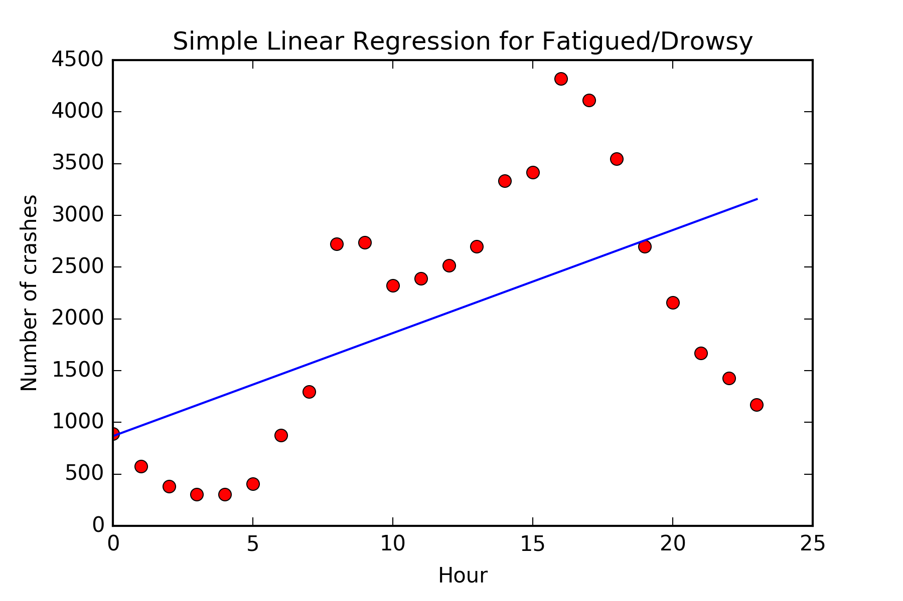

The purpose of this project is to investigate the vehicle crashes and collisions happening in New York City in the time period from July 1st 2012 to April 24th 2017. The main focus of this website is to show how time and place influences what type of crash is most likely to occur.
In the dataset, there are many different types of crashes, but this website focuses on the five following types: Alcohol Involvement, Traffic Control Disregarded, Fatigued/Drowsy, Turning Improperly and Unsafe Speed. These were chosen as they seem to be the most interesting types to analyze. Below you can download the dataset and watch the video leading up to creating this project.
download dataset
In this first part the amount of crashes and collisions are visualized using a map, where each dot corresponds to a car crash or collision. Red dots represents accidents where one or more involved parties were injured and the yellow dots are accidents, where none of the involved parties were injured. You can use the buttons below to choose between the five different types of accidents to see which accidents are the most frequent and which are the most dangerous.
This map shows you the different areas where accident occurs. The different areas have been found using the K-means algorithm. The size of the circle represents how spread out the accidents are, where a larger cirlce means the accidents are more spread out. The opacity shows you how many accidents there are so the more transparent the circle is the less accidents is happening in this area. Hover over the cirlces to see how many accidents is happening in the area and how spread out they are.
The second part is about how the amount of accidents is related to which hour of the day it is. In the first plots below, the number of accidents are shown as red dots and the blue line represents a linear regression, which shows the overall progress over time. Use the buttons below to switch between the five different types of accidents to see, which are more likely to happen at different hours of the day.
